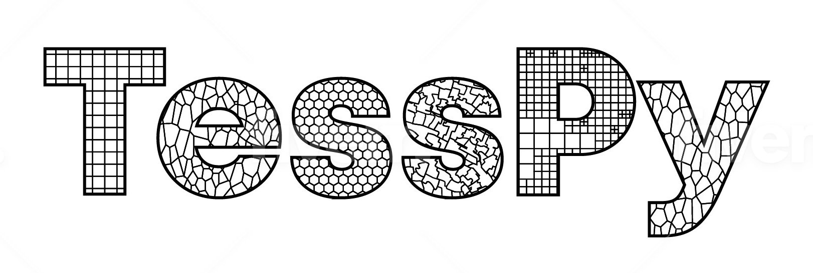

Welcome to tesspy’s documentation!
Introduction
tesspy is a python library for geographical tessellation.
The process of discretization of space into subspaces without overlaps and gaps is called tessellation. Tessellation is essential in understanding geographical space and provides a framework for analyzing geospatial data. Different tessellation methods are implemented in tesspy. They can be divided into two groups. The first group is regular tessellation methods: square grid and hexagon grid. The second group is irregular tessellation methods based on geospatial data. These methods are adaptive squares, Voronoi diagrams, and city blocks. The geospatial data used for tessellation is retrieved from the OpenStreetMap database.
The package is currently maintained by @siavash-saki and @JoHamann.
Install
You can install tesspy from PyPI using pip (Not Recommended):
pip install tesspy
and from conda (Recommended):
conda install tesspy
Creating a new environment for tesspy
tesspy depends on geopandas, which could make the installation sometimes tricky because of the conflicts with the current packages. Therefore, we recommend creating a new clean environment and installing the dependencies from the conda-forge channel.
Create a new environment:
conda create -n tesspy_env -c conda-forge
Activate this environment:
conda activate tesspy_env
Install tesspy from conda-forge channel:
conda install -c conda-forge tesspy
Examples
The city of “Frankfurt am Main” in Germany is used to showcase different tessellation methods. This is how a tessellation object is built, and different methods are called. For the tessellation methods based on Points of Interests (adaptive squares, Voronoi polygons, and City Blocks), we use amenity data from the OpenStreetMap.:
from tesspy import Tessellation
ffm= Tessellation('Frankfurt am Main')
Squares
ffm_sqruares = ffm.squares(resolution=15)

Adaptive Squares
ffm_asq = ffm.adaptive_squares(start_resolution=14, threshold=100, poi_categories=['amenity'])